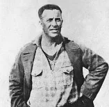

Photo source ↗El Grafico · Public domain
The profile
Alberto Suppici
Alberto Suppici was the coach of Uruguay when the country hosted the first World Cup. His work with the national side came during an era of major Uruguayan success.
Suppici coached Uruguay before and after the inaugural World Cup. He organised a side that included players already experienced in major international matches.
Uruguay won the inaugural tournament in 1930 under Suppici, defeating Argentina 4–2 in the final in Montevideo. He became the first coach to win the World Cup.
1930Uruguay
Champion
Group C Uruguay1 : 0Peru
- Hector CASTRO60′
Uruguayhome
Starting lineup
- Enrique BALLESTRERO
- Jose NASAZZI
- Domingo TEJERA
- Jose ANDRADE
- Lorenzo FERNANDEZ
- Alvaro GESTIDO
- Hector CASTRO
- Pedro CEA
- Victoriano IRIARTE
- Pedro PETRONE
- Santos URDINARAN
Substitutions
- No substitutions
Peruaway
Starting lineup
- Jorge PARDON
- Mario DE LAS CASAS
- Antonio MAQUILON
- Eduardo ASTENGO
- Alberto DENEGRI
- Placido GALINDO
- Jose Maria LAVALLE
- Demetrio NEYRA
- Luis SOUZA
- Alejandro VILLANUEVA
- Julio LORES
Substitutions
- No substitutions
Group C Uruguay4 : 0Romania
- Pablo DORADO7′
- Hector SCARONE24′
- Juan ANSELMO30′
- Pedro CEA35′
Uruguayhome
Starting lineup
- Enrique BALLESTRERO
- Jose NASAZZI
- Ernesto MASCHERONI
- Jose ANDRADE
- Lorenzo FERNANDEZ
- Alvaro GESTIDO
- Juan ANSELMO
- Pedro CEA
- Pablo DORADO
- Victoriano IRIARTE
- Hector SCARONE
Substitutions
- No substitutions
Romaniaaway
Starting lineup
- Ion LAPUSNEANU
- Rudolf BUERGER
- Emerich VOGL
- Iosif CZAKO
- Alfred EISENBEISSER
- Ladislau RAFFINSKY
- Corneliu ROBE
- Adalbert DESU
- Nicolae KOVACS
- Rudolf WETZER
- Stefan BARBU
Substitutions
- No substitutions
Semi-final Uruguay6 : 1Yugoslavia
- Pedro CEA18′
- Juan ANSELMO20′
- Juan ANSELMO31′
- Victoriano IRIARTE61′
- Pedro CEA67′
- Pedro CEA72′
- Djordje VUJADINOVIC4′
Uruguayhome
Starting lineup
- Enrique BALLESTRERO
- Jose NASAZZI
- Ernesto MASCHERONI
- Jose ANDRADE
- Lorenzo FERNANDEZ
- Alvaro GESTIDO
- Juan ANSELMO
- Pedro CEA
- Pablo DORADO
- Victoriano IRIARTE
- Hector SCARONE
Substitutions
- No substitutions
Yugoslaviaaway
Starting lineup
- Milovan JAKSIC
- Milutin IVKOVIC
- Dragan MIHAJLOVIC
- Ljubisa STEFANOVIC
- Milorad ARSENIJEVIC
- Momcilo DJOKIC
- Ivica BEK
- Blagoje MARJANOVIC
- Branislav SEKULIC
- Djordje VUJADINOVIC
- Aleksandar TIRNANIC
Substitutions
- No substitutions
Final Uruguay4 : 2Argentina
- Pablo DORADO12′
- Pedro CEA57′
- Victoriano IRIARTE68′
- Hector CASTRO89′
- Carlos PEUCELLE20′
- Guillermo STABILE37′
Uruguayhome
Starting lineup
- Enrique BALLESTRERO
- Jose NASAZZI
- Ernesto MASCHERONI
- Jose ANDRADE
- Lorenzo FERNANDEZ
- Alvaro GESTIDO
- Hector CASTRO
- Pedro CEA
- Pablo DORADO
- Victoriano IRIARTE
- Hector SCARONE
Substitutions
- No substitutions
Argentinaaway
Starting lineup
- Juan BOTASSO
- Jose DELLA TORRE
- Fernando PATERNOSTER
- Luis MONTI
- Juan EVARISTO
- Pedro SUAREZ
- Carlos PEUCELLE
- Francisco VARALLO
- Mario EVARISTO
- Manuel FERREIRA
- Guillermo STABILE
Substitutions
- No substitutions